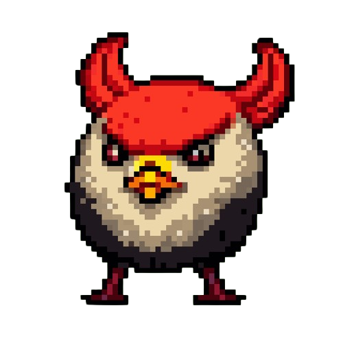

The Mixed Media Gallery
Testing videos, GIFs and other file formats to display on the web and how they interact with CSS and Javascript
Home
Art Gallery
My Bearblog
Media Page
My very first ever elden ring boss attempt
